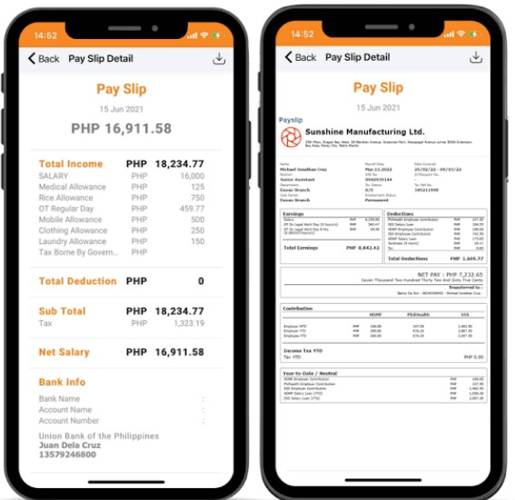
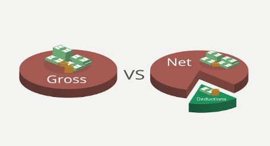
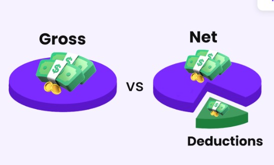
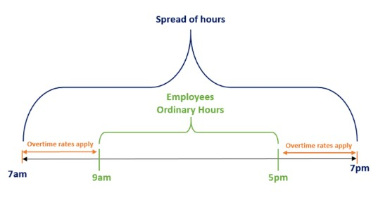
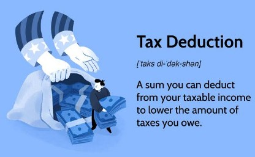
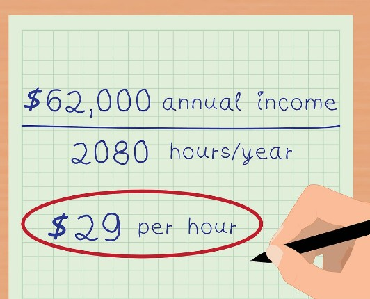

🎥 Heard in Video
💵 Salary
/ˈsæl.əri/
A fixed amount of money paid regularly by your employer.
"My salary is paid every fortnight."
salary increase
salary payment
monthly salary
🎥 Heard in Video

📄 Payslip
/ˈpeɪ.slɪp/
A document showing your earnings and deductions.
"I checked my payslip yesterday."
electronic payslip
weekly payslip
download payslip
🏢 Payroll
/ˈpeɪ.rəʊl/
The department responsible for paying employees.
"Please contact Payroll."
payroll officer
payroll system
payroll department
🎥 Heard in Video

💰 Gross Pay
/ɡrəʊs peɪ/
Your pay before tax and deductions.
"My gross pay was $1,250."
gross income
gross earnings
🎥 Heard in Video

🏦 Net Pay
/net peɪ/
The money deposited into your bank account.
"My net pay is lower than my gross pay."
take-home pay
net salary
🎥 Heard in Video

💼 Ordinary Pay
/ˈɔː.dɪ.nər.i peɪ/
The money you earn for your normal working hours before overtime or penalty rates are added.
"I worked 38 ordinary hours this week."
ordinary pay
ordinary hours
ordinary hourly rate
🗣️ Make Your Own Sentence
- My ordinary pay is __________.
- I worked ______ ordinary hours this week.
- My ordinary hourly rate is __________.
🧾 Tax
/tæks/
Money deducted and paid to the government.
"Tax is automatically deducted."
income tax
tax deduction
🏖 Superannuation
/ˌsuː.pər.æn.juˈeɪ.ʃən/
Money saved for your retirement.
"My employer pays super."
super fund
super payment

➖ Deduction
/dɪˈdʌk.ʃən/
Money taken away from your pay.
"There are several deductions."
tax deduction
salary deduction

⏰ Hourly Rate
/ˈaʊə.li reɪt/
How much you earn per hour.
"My hourly rate is $31."
hourly wage
base rate
⏳ Overtime
/ˈəʊ.və.taɪm/
Extra hours worked beyond normal hours.
"I worked four hours of overtime."
overtime pay
work overtime
💳 Allowance
/əˈlaʊ.əns/
Extra money paid for certain work conditions.
"I receive a cold room allowance."
📅 Payday
/ˈpeɪ.deɪ/
The day employees receive their wages.
"Friday is payday."